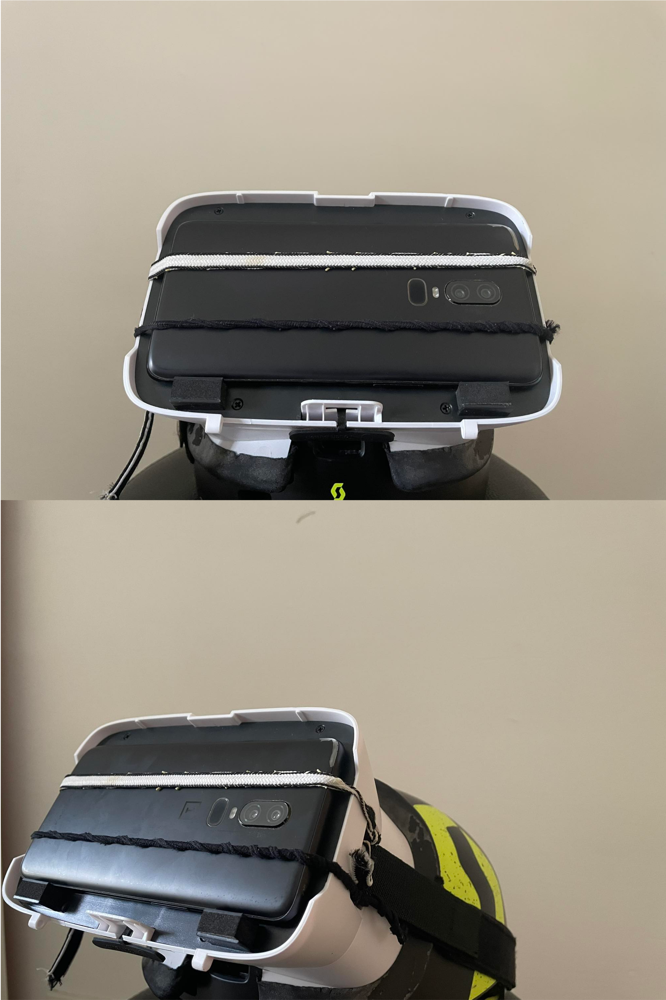

AR Driving using Mobile Phones
For my thesis carried out at the end of my course, I researched AR Driving using Mobile Phones.
During my research I realized that a major issue with current AR solutions is that
hardware is too expensive.
Therefore the aim of this research is to make AR more accessible by creating an AR
app on a mobile phone that only requires an additional $18 for a headset to place the user's phone
in. An example of this can be seen on the right.
The issue with making AR available on mobile phones is that stereoscopic vision must be achieved.
Stereoscopic vision refers to the ability for humans to see in 3D using the different perspectives of both eyes.
The slightly different views of each eye is blended by the brain to create a 3D image, allowing humans to perceive
depth.
The scope of this project, therefore, was to achieve stereoscopic vision using a single mobile phone
camera with minimal lag. If you wish to read more about the research conducted and results achieved you may download
the thesis from here :
AR Driving using Mobile Phones.
